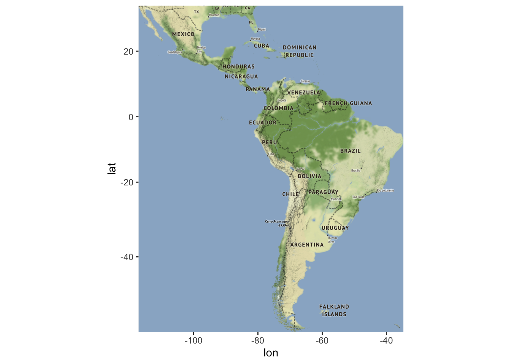
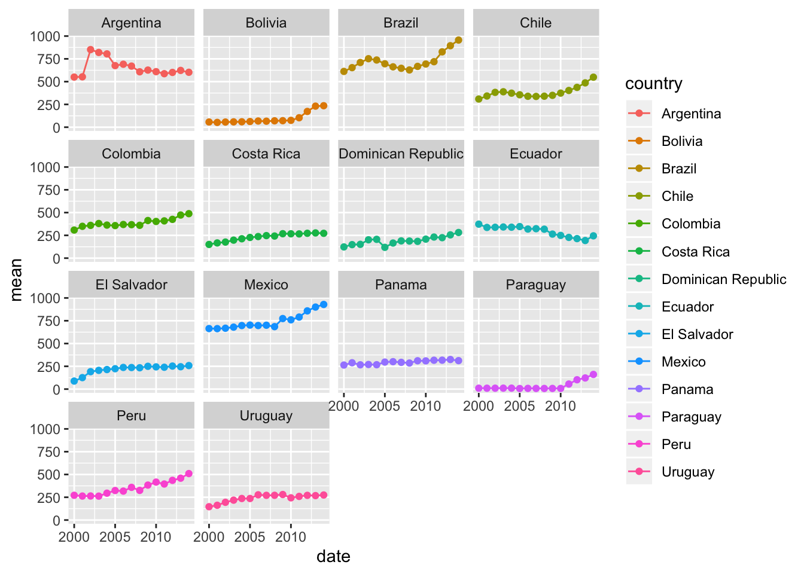

The UN Development Program every year publishes it’s Human Development Index. The goal of this measure is to measure human development by country with respect to economic output, education level and health outcome. The goal of this project will be to reimagine such an index to account for political stability, economic stability, and economic sustainability. The index will be calculated and analyzed for nations comprising Latin America.
ggmap(map)
This section will describe data sources and coding methods. Before proceeding to the code and data itself however, it is important to discuss how this index will be defined.
Being that the Index is a model, it will be important to understand the key assumptions it relies on, namely how it’s inputs represent what they claim to represent.
Political Stability - This will be represented by the level of public (or government) debt in a single country. The thinking here is that as public debt levels increase, a nation’s government will become increasingly unstable.
Economic Stability - One of the most common macroeconomic indicators of economic stability is the inflation rate. The Consumer Price Index of each country, a measure tracking the prices of all goods in a country intended for end consumers, will be included. An unchecked inflation rate is always a danger to any economy.
Environmental Sustainability - The are a plethora of measure that may be used to track a nation’s environmental sustainability. Although some of these measures may change over time, levels of Carbon Dioxide Emissions are always a concern. Therefore CO2 emissions by country will be included.
Thus the general workflow proceeds as follows:
library(fredr)
library(wbstats)
library(dplyr)
library(ggplot2)
library(foreach)
library(spData)
library(sf)
library(plm)
library(forecast)
library(rworldmap)
library(ggmap)Arg = fredr_series_search_text("Argentina debt GDP")
head(Arg$title)## [1] "General government gross debt for Argentina"
## [2] "General Government Gross Debt for Argentina"
## [3] "Total Credit to Private Non-Financial Sector, Adjusted for Breaks, for Argentina"
## [4] "Total Credit to Private Non-Financial Sector, Adjusted for Breaks, for Argentina"
## [5] "Outstanding Total International Debt Securities to GDP for Argentina"
## [6] "Outstanding Domestic Public Debt Securities to GDP for Argentina"Arg$id[5]## [1] "DDDM07ARA156NWDB"Arg.debt = fredr("DDDM07ARA156NWDB")
dates = c(1999:2014)
dates.1 = c(1980:2017)
debtnames = c("date", "debt")
Arg.debt.1 = cbind(dates.1, Arg.debt) %>%
filter(dates.1 >= 2000) %>%
filter(dates.1 <= 2014) %>%
dplyr::select(dates.1, value) %>%
arrange((desc(dates.1)))
colnames(Arg.debt.1) <- c("date", "Arg.debt")wbsearch(pattern = " CO2 emission")## indicatorID
## 5521 EN.CO2.ETOT.ZS
## indicator
## 5521 CO2 emissions from electricity and heat production, total (% of total fuel combustion)CO2 = wb(indicator = "EN.ATM.CO2E.KT")
Arg.CO2 = CO2 %>%
filter(country == "Argentina") %>%
filter(date >= 2000) %>%
dplyr::select(date, value) %>%
arrange((desc(date)))
colnames(Arg.CO2) <- c("date1", "Arg.CO2")Arg.CPI = fredr_series_search_text("Argentina CPI")
head(Arg.CPI$title)## [1] "Inflation, consumer prices for Argentina"
## [2] "Consumer Price Index for Argentina"
## [3] "Consumer Price Index for Argentina"
## [4] "Consumer Price Index: All items: Total: Total for Argentina"
## [5] "Consumer Price Index: All items: Total: Total for Argentina"
## [6] "Consumer Price Index: All items: Total: Total for Argentina"Arg.CPI$id[2]## [1] "DDOE01ARA086NWDB"Arg.CPI = fredr("DDOE01ARA086NWDB")
CPIdates.1 = c(1960:2014)
Arg.CPI.1 = cbind(CPIdates.1, Arg.CPI) %>%
filter(CPIdates.1 >= 2000) %>%
filter(CPIdates.1 <= 2014) %>%
dplyr::select(CPIdates.1, value) %>%
arrange((desc(CPIdates.1)))
colnames(Arg.CPI.1) <- c("date2", "Arg.CPI")Arg = cbind(Arg.debt.1, Arg.CO2)
Arg = cbind(Arg, Arg.CPI.1) %>%
dplyr::select(date, Arg.debt, Arg.CO2, Arg.CPI)
Arg.mean= ((Arg$Arg.debt*Arg$Arg.CO2*Arg$Arg.CPI)^(1/3))
Arg = cbind(Arg, Arg.mean)Note the object Arg.mean. This variable is the cubed root of a product of three inputs. To calculate this mean debt level, CO2 emisssions, and the CPI are all multiplied together. Because there are three inputs, the cubed root is taken. This is called a geometric mean, as opposed to the familiar arthimetic mean. The reason for using the geometric mean is that it is the same measure the UNDP uses to calculate the Human Development Index
str(AU)## 'data.frame': 210 obs. of 6 variables:
## $ country: Factor w/ 14 levels "Argentina","Bolivia",..: 1 1 1 1 1 1 1 1 1 1 ...
## $ date : int 2014 2013 2012 2011 2010 2009 2008 2007 2006 2005 ...
## $ debt : num 9.47 9.46 9.3 9.65 12.05 ...
## $ CO2 : num 204025 189852 192356 191634 187919 ...
## $ CPI : num 113 135 121 110 100 ...
## $ mean : num 603 623 601 587 609 ...head(AU)## country date debt CO2 CPI mean
## 1 Argentina 2014 9.46895 204024.5 113.3800 602.8004
## 2 Argentina 2013 9.46153 189851.6 134.6680 623.0841
## 3 Argentina 2012 9.29994 192356.2 121.3980 601.0804
## 4 Argentina 2011 9.64515 191633.8 109.5330 587.1855
## 5 Argentina 2010 12.04860 187919.1 100.0000 609.4936
## 6 Argentina 2009 15.17380 179961.7 90.1606 626.7539ggplot(AU, aes(date, mean, col = country))+
geom_point()+
geom_line()+
facet_wrap(~country) Note that as the indicator goes up, utility goes down.
Next is it possible to identify a trend?
There isn’t enough data yet to build a time-series model of any one single country. However, if we use a panel data model, it is possible to extend our analysis across borders.
AU.fe <- plm(mean~date, data = AU, model = "within")
summary(AU.fe)## Oneway (individual) effect Within Model
##
## Call:
## plm(formula = mean ~ date, data = AU, model = "within")
##
## Balanced Panel: n = 14, T = 15, N = 210
##
## Residuals:
## Min. 1st Qu. Median 3rd Qu. Max.
## -166.1575 -27.5008 -4.4719 26.9320 210.0539
##
## Coefficients:
## Estimate Std. Error t-value Pr(>|t|)
## date2001 13.430 19.787 0.6787 0.4981908
## date2002 49.486 19.787 2.5009 0.0132704 *
## date2003 61.328 19.787 3.0994 0.0022475 **
## date2004 63.496 19.787 3.2089 0.0015747 **
## date2005 50.068 19.787 2.5303 0.0122447 *
## date2006 54.455 19.787 2.7520 0.0065221 **
## date2007 56.297 19.787 2.8451 0.0049482 **
## date2008 45.442 19.787 2.2965 0.0227865 *
## date2009 65.880 19.787 3.3294 0.0010535 **
## date2010 66.697 19.787 3.3707 0.0009155 ***
## date2011 76.852 19.787 3.8839 0.0001437 ***
## date2012 106.069 19.787 5.3605 2.492e-07 ***
## date2013 130.377 19.787 6.5889 4.622e-10 ***
## date2014 153.367 19.787 7.7508 6.226e-13 ***
## ---
## Signif. codes: 0 '***' 0.001 '**' 0.01 '*' 0.05 '.' 0.1 ' ' 1
##
## Total Sum of Squares: 804370
## Residual Sum of Squares: 498820
## R-Squared: 0.37986
## Adj. R-Squared: 0.28786
## F-statistic: 7.96308 on 14 and 182 DF, p-value: 4.3339e-13Using a Fixed Effects model explains just under 30% of the variation we see in our model
AU.ra <- plm(mean~date, data = AU, model = "random")
summary(AU.ra)## Oneway (individual) effect Random Effect Model
## (Swamy-Arora's transformation)
##
## Call:
## plm(formula = mean ~ date, data = AU, model = "random")
##
## Balanced Panel: n = 14, T = 15, N = 210
##
## Effects:
## var std.dev share
## idiosyncratic 2740.76 52.35 0.054
## individual 48342.93 219.87 0.946
## theta: 0.9386
##
## Residuals:
## Min. 1st Qu. Median 3rd Qu. Max.
## -169.3128 -31.5876 -5.9096 21.6465 229.1669
##
## Coefficients:
## Estimate Std. Error z-value Pr(>|z|)
## (Intercept) 280.594 60.406 4.6452 3.398e-06 ***
## date2001 13.430 19.787 0.6787 0.4973287
## date2002 49.486 19.787 2.5009 0.0123871 *
## date2003 61.328 19.787 3.0994 0.0019393 **
## date2004 63.496 19.787 3.2089 0.0013324 **
## date2005 50.068 19.787 2.5303 0.0113970 *
## date2006 54.455 19.787 2.7520 0.0059226 **
## date2007 56.297 19.787 2.8451 0.0044393 **
## date2008 45.442 19.787 2.2965 0.0216474 *
## date2009 65.880 19.787 3.3294 0.0008703 ***
## date2010 66.697 19.787 3.3707 0.0007497 ***
## date2011 76.852 19.787 3.8839 0.0001028 ***
## date2012 106.069 19.787 5.3605 8.300e-08 ***
## date2013 130.377 19.787 6.5889 4.430e-11 ***
## date2014 153.367 19.787 7.7508 9.133e-15 ***
## ---
## Signif. codes: 0 '***' 0.001 '**' 0.01 '*' 0.05 '.' 0.1 ' ' 1
##
## Total Sum of Squares: 840000
## Residual Sum of Squares: 534450
## R-Squared: 0.36375
## Adj. R-Squared: 0.31807
## Chisq: 111.483 on 14 DF, p-value: < 2.22e-16Using a Random Effects model explains just over 30% of the variation we see in our model
Indices are an interesting may of measuring trends over time and space. There are many that exist that provide us with new information every year. Creating a new index may not be too difficult conceptually, but there are challenges to building one that is effective. There should be a strong case that a combination of quantitative variables represent a changing process in the world. Next, ensuring a sufficient amount of data exists is necessary for building the strongest time-series or panel data models.